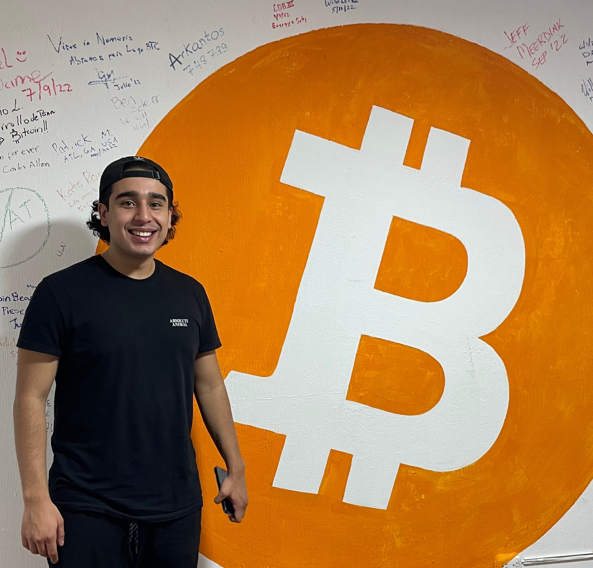

Conoce al equipo
-
Eliazar

Community Leader
-
Rudy Gallardo
Voluntario
Llevar bitcoin a todos los pueblos del Lago de Atitlan. Para empoderar financieramente a los habitantes.
Bitcoin Lake a importado más de 40 cursos de bitcoin a diferentes instituciones e individuos alrededor del Lago de Atitlán.
Más de 200 personas han aprendido sobre bitcoin en el Lago
El lago de atitlán cuenta con más de 100 comercios que aceptan bitcoin, gracias a las iniciativas de educación y los benefecios de aceptar bitcoin. También puedes vender y comprar bitcoin en el cajero Lightning que está en el Lago de Atitlán.